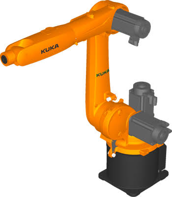
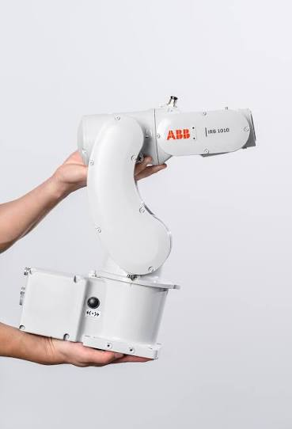
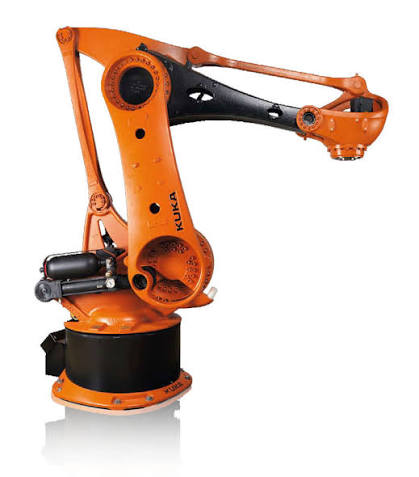
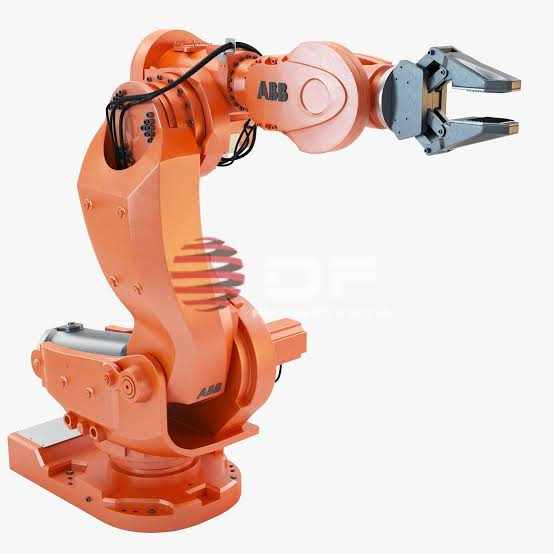
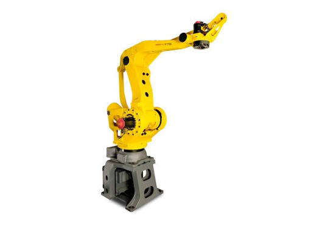

O robô delta é um tipo de robô industrial caracterizado por sua estrutura paralela, composta por três braços leves conectados a uma base fixa, permitindo movimentos extremamente rápidos e precisos. Seu espaço de trabalho possui formato semelhante a um domo, tornando-o ideal para aplicações de alta velocidade, como sistemas Pick and Place, montagem, classificação e embalagem de produtos, garantindo elevada repetibilidade e eficiência em processos automatizados.


O robô polar, também conhecido como robô esférico, é um manipulador industrial cuja movimentação é baseada em coordenadas polares, combinando movimentos rotacionais com um deslocamento linear. Essa configuração permite que o robô alcance diferentes posições dentro de um espaço de trabalho em formato esférico, oferecendo grande flexibilidade para executar tarefas em diversas direções. Devido à sua capacidade de acessar áreas de difícil alcance, é amplamente utilizado em aplicações como soldagem, pintura, fundição, manipulação de materiais e montagem industrial. Além disso, o robô polar pode ser integrado a sistemas de automação e tecnologias da Indústria 4.0, permitindo comunicação com sensores inteligentes, sistemas de visão, monitoramento em tempo real e otimização dos processos produtivos.
Fabricantes reconhecidos mundialmente desenvolvem robôs industriais com arquitetura polar para aplicações que exigem amplo alcance, flexibilidade de movimentos e elevada precisão. Esses robôs são utilizados em processos como soldagem, pintura, manipulação de materiais e automação de linhas de produção.

A KUKA é referência mundial em robótica industrial, oferecendo soluções para processos de soldagem, pintura, manipulação de materiais e automação avançada, com equipamentos reconhecidos pela precisão, robustez e confiabilidade.

A ABB desenvolve robôs industriais de alto desempenho para aplicações que exigem grande flexibilidade e precisão, atendendo setores como a indústria automotiva, metalúrgica, eletrônica e de bens de consumo.

A FANUC é uma das maiores fabricantes de robôs industriais do mundo, fornecendo soluções para manipulação de materiais, soldagem, montagem e inspeção, destacando-se pela elevada produtividade, precisão e integração com sistemas de automação.